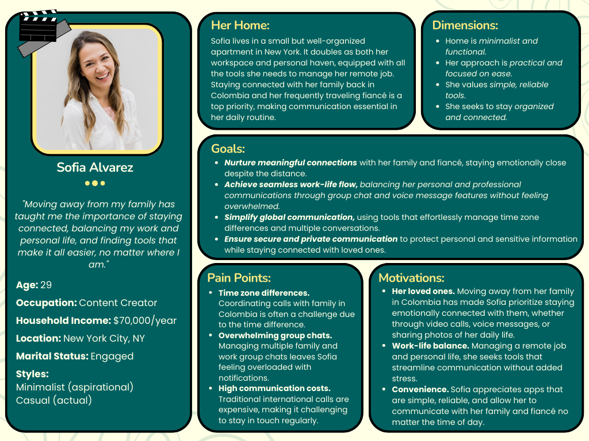

CIS*1250 Assignments ~ Lana Ghonem
Writing Assignment 1
The software development process is a methodical strategy for creating and developing software for a system or project.
It is the process software developers and programmers use to build computer/software programs.
In short, it is the process of planning.
Software design is important because it ensures the creation of efficient, reliable, and user-friendly applications that meet both developer and user needs.
A well-thought-out software design serves as a blueprint for development, minimizing errors and inefficiencies while facilitating collaboration among
team members. It lays the foundation for building software that is maintainable, scalable, and adaptable to future requirements.
Poor design, on the other hand, can lead to costly mistakes, delays, and a product that fails to satisfy users.
An example of software that I have personally used and believe is exceptionally well-designed is WhatsApp.
Its intuitive and user-friendly interface makes communication seamless, even for those who aren't tech-savvy.
On a personal level, WhatsApp has been a lifeline that keeps me connected with my father, who lives halfway across the world.
The app's reliable messaging, voice, and video call features have bridged the distance between us, allowing us to share moments and maintain
a close relationship despite the miles between us. The simplicity of its design ensures that all essential functions are easily accessible,
reducing any learning curve for new users. WhatsApp's commitment to privacy and security, with end-to-end encryption,
gives me peace of mind that our conversations remain confidential.
Regular updates enhance performance and introduce thoughtful features without overwhelming the interface.
Overall, WhatsApp's design focuses on delivering a powerful yet uncomplicated user experience,
prioritizing the features that matter most while maintaining a clean and straightforward interface.
This blend of simplicity, functionality, and reliability is why I consider it an outstanding example of excellent software design.
Writing Assignment 2
1. Summary of the Requirements Gathering Stage:
The requirements gathering stage is a critical part of the software development process, where the needs and expectations of stakeholders are identified,
documented, and clarified. This stage involves collaboration between developers, users, and stakeholders to define what the software should do, how it should
function, and any constraints that must be considered. Various methods like interviews, surveys, workshops, and analysis of existing systems are used
to ensure all necessary details are captured. Requirements gathering helps in understanding the project's goals and the user’s perspective,
ensuring that the final product aligns with the intended use. One of the key reasons this stage is important is that it sets the foundation for
the entire development process. Clear, well-documented requirements reduce the risk of misunderstandings, scope creep, and changes later in the project.
If the requirements are vague or incomplete, it can lead to costly revisions and delays during later stages. By identifying all functional and non-functional
requirements upfront, the development team can work more efficiently, reducing the likelihood of rework, and improving the chances of delivering a product
that meets expectations on time and within budget.
2. 5 User Stories for WhatsApp:
1. As a WhatsApp user, I want to send text messages, so that I can communicate easily with my contacts.
2. As a group admin, I want to create and manage group chats, so that I can organize discussions with multiple people.
3. As a WhatsApp user, I want to send images and videos, so that I can share multimedia content quickly and efficiently.
4. As a WhatsApp user, I want to make voice and video calls, so that I can connect with others without needing a separate app.
5. As a WhatsApp user, I want to enable notifications for specific chats, so that I can prioritize important conversations.
Writing Assignment 3
Below is the detailed user persona for Sofia Alvarez.
This persona highlights Sofia's key characteristics, needs, and challenges as she navigates
life balancing personal connections and work across different locations. Sofia’s journey emphasizes the importance of seamless, reliable communication
tools to help her stay connected with her family and fiancé, no matter where she is.

The software product from my Writing Assignment 1 is WhatsApp. Although WhatsApp is not explicitly mentioned in the persona, the needs and characteristics outlined in Sofia Alvarez's profile clearly reflect those of a typical WhatsApp user. Sofia is an international content creator living in New York, staying connected with her family in Colombia and her frequently traveling fiancé. Her challenges, such as navigating time zone differences, managing group chats, and avoiding high communication costs, are precisely the problems WhatsApp is designed to solve.
WhatsApp’s free international messaging, voice, and video call features provide Sofia with a seamless and cost-effective way to maintain her meaningful connections. The app’s ability to handle group chats and offer reliable communication across time zones simplifies her busy life, allowing her to manage both personal and work-related conversations efficiently. Additionally, WhatsApp’s focus on secure communication through end-to-end encryption matches Sofia's need for privacy and reliability. The platform’s media-sharing capabilities also support her desire to share life updates with her family, making it the perfect tool for her daily communication needs.
This persona demonstrates the essential qualities that a WhatsApp user seeks: staying emotionally connected, managing global communication, and doing so conveniently and securely—making Sofia an ideal representation of a typical WhatsApp user.
Writing Assignment 4
Effective communication is essential in software design, serving as the foundation for transforming abstract ideas into functional, user-centered products.
It fosters collaboration, aligns diverse perspectives, and reduces misunderstandings, ultimately improving project quality and efficiency. Clear communication is
particularly critical during the development process, where frequent exchanges between team members—such as developers, designers, and stakeholders—ensure that everyone understands
the project requirements, timelines, and goals.
Three key elements of effective communication are active listening, structured feedback, and shared criteria.
Active listening means fully engaging with others' ideas and confirming understanding, which promotes inclusivity and ensures that valuable insights aren’t overlooked.
Structured feedback provides a respectful, constructive way to discuss ideas, allowing the team to refine designs in a focused, efficient manner. Shared criteria help maintain objectivity,
providing a common basis for evaluating ideas, which is particularly helpful in decision-making processes where differing opinions arise.
In Lab 7, my group faced a communication challenge during our brainstorming session, where we struggled to rank and prioritize ideas due to conflicting interpretations of our criteria.
This led to confusion and tension, delaying our progress. Reflecting on what I’ve learned in class, I recognize that defining our evaluation criteria together from the start would have improved
our collaboration. I could have proposed that we collectively set specific, agreed-upon criteria for ranking ideas, ensuring everyone was on the same page. Additionally, facilitating active listening
through a shared online whiteboard could have made it easier to capture and discuss ideas without anyone feeling unheard. By applying these communication skills, such as summarizing each member’s input
and regularly checking for alignment, I could have fostered a smoother, more inclusive decision-making process. This experience highlighted that clear communication, rooted in active listening, structured
feedback, and shared criteria, is vital for cohesive teamwork and achieving high-quality outcomes in software design.
Writing Assignment 5
Consistency is a foundational principle in software design that ensures a unified and predictable user experience by maintaining similar patterns, behaviors,
and aesthetics throughout a product. This principle applies not only to the visual design—such as colors, fonts, and layouts—but also to the
functionality, interactions, and workflows of a system. By adhering to consistency, designers reduce the cognitive load on users,
making interfaces intuitive and easy to navigate. It ensures users can apply what they learn in one part of the system to other areas,
ultimately improving usability and enhancing satisfaction.
The importance of consistency becomes evident when examining products that prioritize it. For instance, Google Workspace applications like Docs, Sheets, and Slides demonstrate consistency through a shared toolbar design, uniform icons, and similar menu structures. This allows users to transition effortlessly between tools without needing to learn new interactions. Another example is found in Apple's ecosystem, where the consistent design language across devices—such as iPhones, iPads, and Macs—creates a seamless experience for users who switch between platforms. Features like gestures, navigation buttons, and settings are standardized, reducing friction and reinforcing trust in the brand.
Conversely, a lack of consistency can significantly hinder user experience. For example, imagine a website where navigation menus are placed differently on every page, or buttons with similar purposes are styled inconsistently. Such discrepancies confuse users, increase frustration, and diminish the overall quality of the product. This issue can be avoided by following established design guidelines and testing for consistency during development.
Incorporating consistency into software design is not just about aesthetics but also about creating a user-centric product that feels reliable and intuitive. Consistent design builds familiarity, strengthens user confidence, and ensures that users can focus on achieving their goals without unnecessary distractions or confusion.